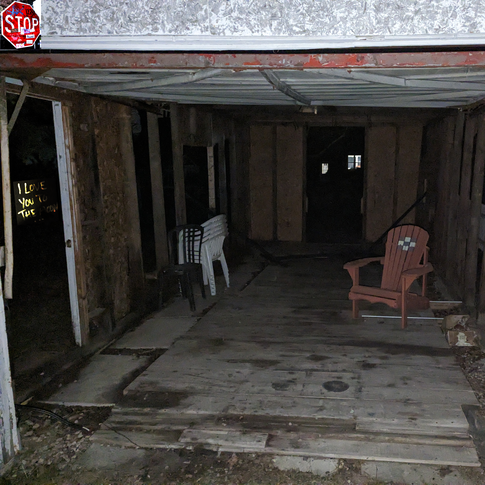

jump to: [lyrics] [breakdown]
♪
i never learned how to play pretend
never had a chance to talk-a-talk it through
like i'm stuck in the sand
the same old feet in the same old shoes
but when i'm all out of jokes
and i'm all out of prose
will you still be listening
and when i'm all out of time
when i'm out of my mind
was it worth it, every second
i wished for fire
you gave me flames
i wished for water
you made it rain
i wanted earth
so you kept me grounded
i needed air
yeah, air me out you did
♪
oh i think i am a woman
and i think i hate my job
i think i want to kill my father
i wanna be a heartthrob
and i wanna be famous
and i wanna be hated
and i wanna say no
and i wanna say stop
and i want it
and i want it
and i want it
i wanna wanna want it to STOP!!!!!!!!
♪
i take a piece, call that BPD
i don't need to breathe, tell my OCD
"who the fuck do you think you are you
smarmy little worm, you parasite?"
cause if i run out of stories
and i run out of quarters
are you still breathing
and if it's too late to ask
if the moment has passed
can you hear me, hey are you with me?
don't leave me on the line like this
don't leave me hanging off the hook
don't tune me out
don't tune me out
i wished for fire
you gave me flames
i wished for water
you made it rain
i wanted earth
so you kept me grounded
i needed air
yeah, air me out you did
you call it something
i say it's not
you wanna argue
tie both our throats up in knots
aw
♪
This song is about all the things that bug me, all the ways I feel inadequate, and all the ways I feel let down.
Some parts of this song I abstracted from their original meanings so much that I no longer recall what said meanings were. Still, there are many that I do remember, such as the bridge. This was the first part of the song I wrote at all. It was originally a little different, and I adjusted it to fit more to who I am, instead of an aimless jab at myself. I know myself to have OCD, though not yet diagnosed, and at times I've worried I also have BPD, though I have confidence that's not the case now. I consider my OCD to be a parasite, and wish it gone.
The chorus reflects the four classical elements: fire, water, earth, and air. I toyed with the idea that they all represented something about myself, but I couldn't find a way to make it work, so instead I landed on four metaphors to represent getting almost what you want, but still in a way that disappoints.
The second verse is the most unsubtle thing I've ever written. Simple and plain, I think I'm a woman, I think I hate my job, et cetera. I feel overwhelmed by all my wants and needs, and crescendo to an ultimate desire to not want at all.
Instrumentally, Stencil vaguely resembles the physical release of Deadlines by Car Seat Headrest, and to a much more obvious degree, the original Deadlines demo, Wifi. All three main versions of Deadlines, as well as Wifi, are major inspirations to me, and continue to appear in small references throughout the full album. That said, I still try to make my work my own.
—Robin